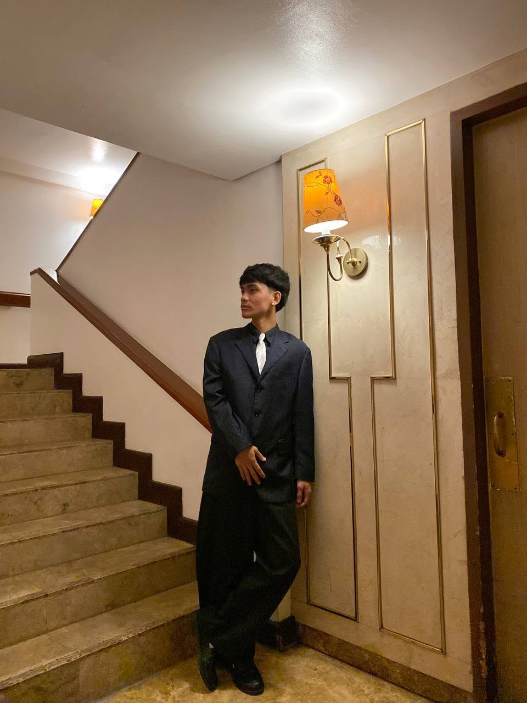
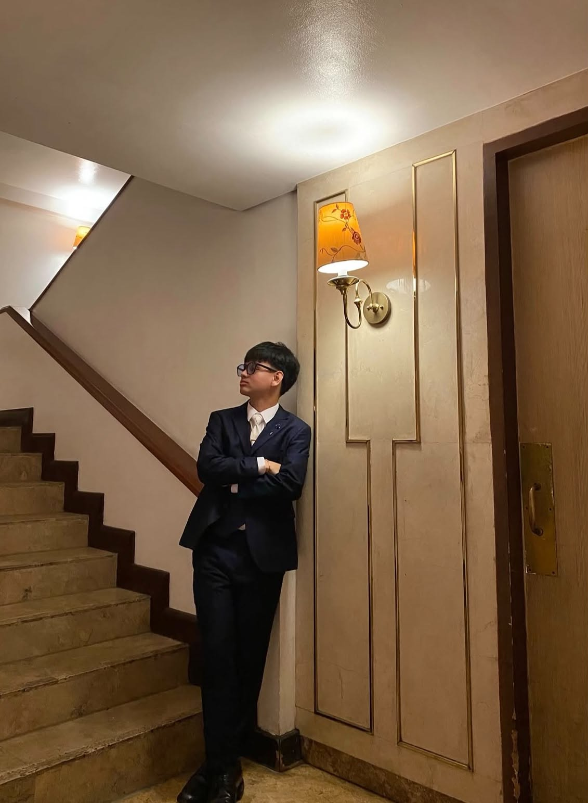
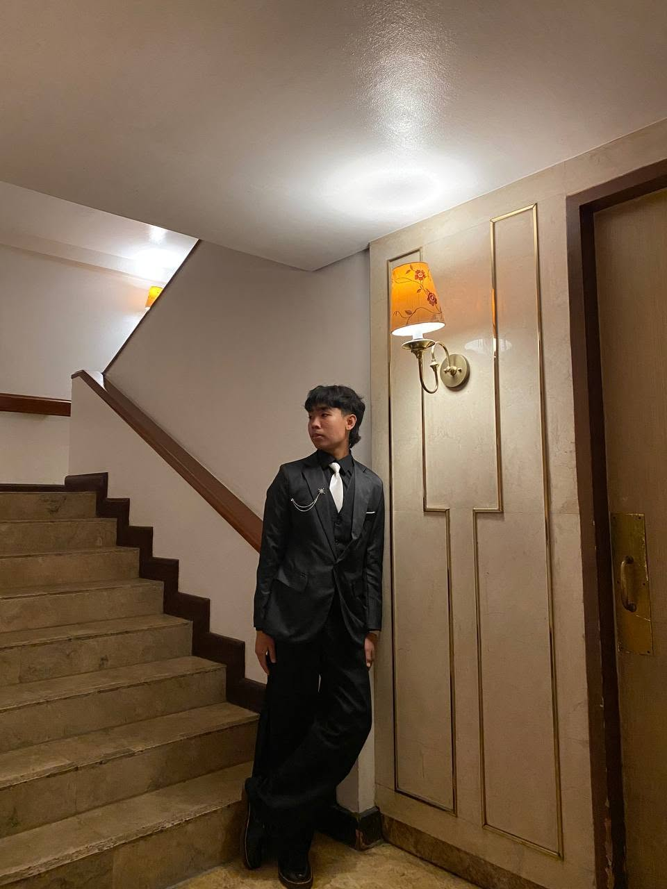
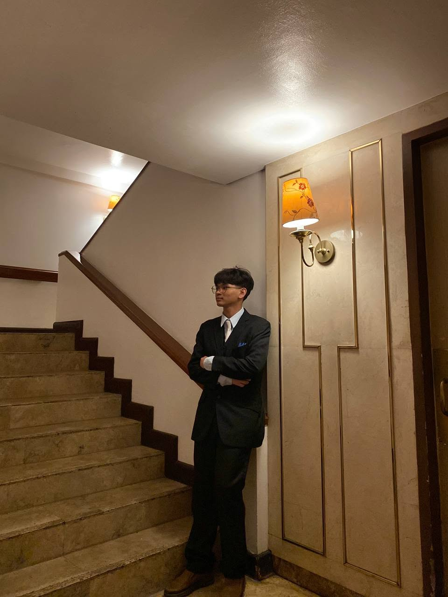
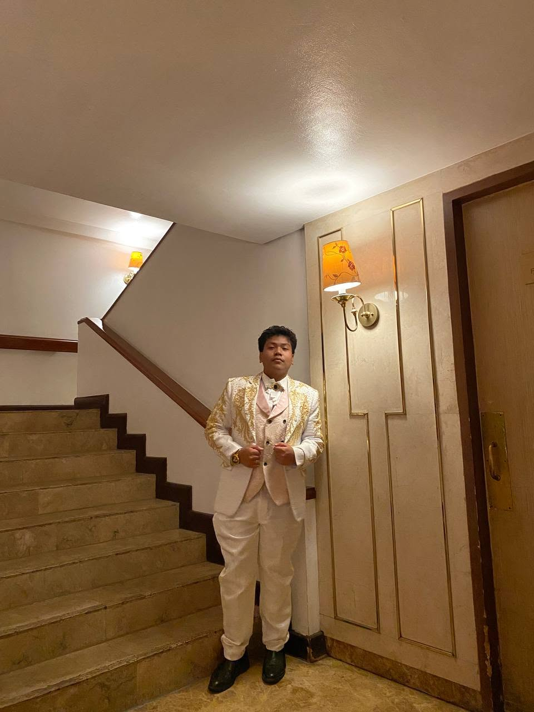
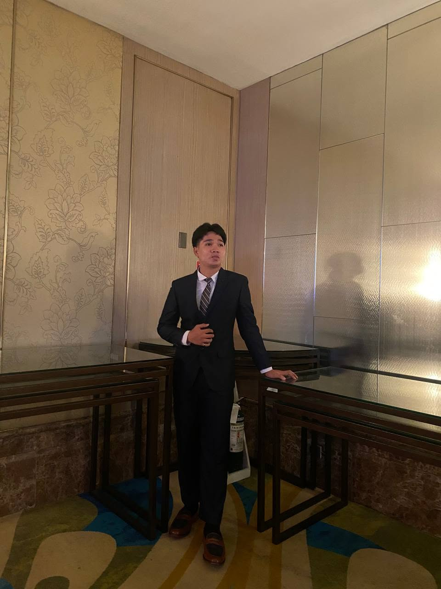
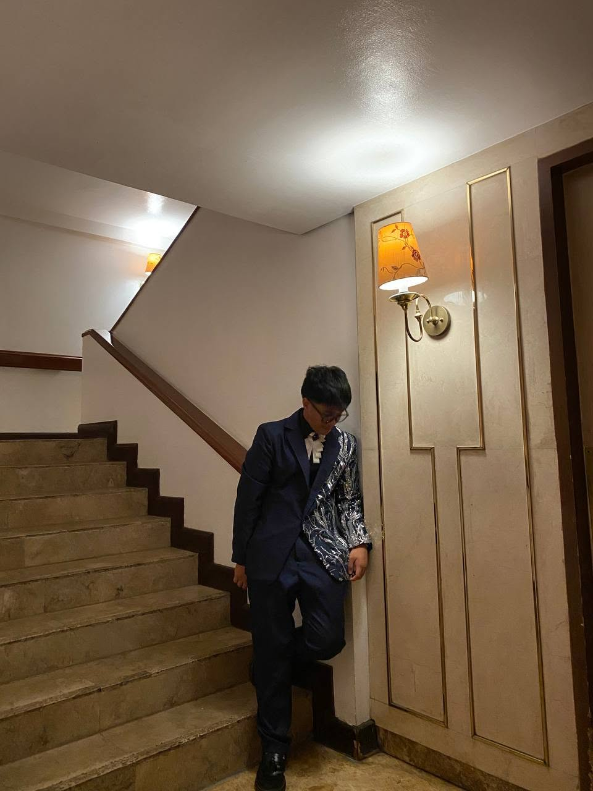

ABOUT TRASHCANET
SMART WASTE MANAGEMENT.
TRASHCANET is a smart trash bin prototype designed to encourage proper PET bottle disposal through smart sensing, verification, and data-driven waste management.
OUR PURPOSE
DETECT | VERIFY | RECYCLE
TRASHCANET was developed to help address improper disposal of PET bottles by combining technology with responsible waste management practices.
Through sensors and a connected system, TRASHCANET helps identify and verify recyclable bottles while encouraging users to practice proper waste disposal.
MEET THE TEAM
ADAM
KRISTEO
ABLAY
Software & System Developer

BJORN
FEOUS
CALUYA
Founder of TRASHCANET

JIAN
KARL
FUROC
Research & Data Analyst

RAINNE
TIMOTHY
JOSEPH
GARCIA
Hardware & Electronics Developer

JAIRUS
MIGUEL
LAGUITAO
leader of the group, Testing & Quality Assurance

PAOLO
LAWRENCE
MENDOZA
Prototype & Mechanical Designer

KYLE
GABRIELLE
PAULINO
Lead Creator & Website Developer

HOW IT WORKS
SMARTER DISPOSAL
TRASHCANET uses sensors and a connected system to detect, verify, and manage PET bottle disposal. The system is designed to make proper waste segregation easier and more engaging for users.